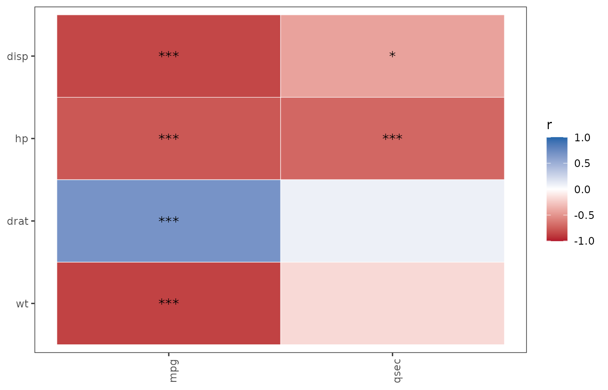

FDR correction scope: matrix-wide vs per-outcome
Source:vignettes/fdr-correction.Rmd
fdr-correction.RmdThe heatmap/matrix family in SciDataReportR
(PlotCorrelationsHeatmap(), PlotPhiHeatmap(),
PlotChiSqCovar(),
PlotAnovaRelationshipsMatrix(),
PlotMiningMatrix(), the interaction-effect matrices, and
PlotDirectionalHeatmaps()) tests many hypotheses at once,
so every one of these functions applies a false discovery rate (FDR)
correction. As of version 19.15.0 all of that correction runs through
one exported helper, ApplyFDRCorrection(), and every
function in the family takes an fdr_scope argument that
controls which family of tests the correction is computed
over:
-
fdr_scope = "matrix"(the default, and the historical behavior): all p-values in the matrix are corrected together as one family. -
fdr_scope = "per_outcome": each outcome’s p-values are corrected separately. Each function documents which axis is the “outcome” axis in itsfdr_scopeparameter documentation.
ApplyFDRCorrection() directly
ApplyFDRCorrection() works on a matrix (or data frame)
of p-values. Here is a small made-up example, with predictors as rows
and outcomes as columns:
pm <- matrix(
c(0.005, 0.04, 0.03, 0.01, NA, 0.002),
nrow = 2,
dimnames = list(c("pred1", "pred2"), c("out1", "out2", "out3"))
)
pm
#> out1 out2 out3
#> pred1 0.005 0.03 NA
#> pred2 0.040 0.01 0.002Matrix-wide correction treats all five finite p-values as one family
(NA cells are left untouched):
ApplyFDRCorrection(pm, fdr_scope = "matrix")
#> out1 out2 out3
#> pred1 0.0125 0.03750000 NA
#> pred2 0.0400 0.01666667 0.01Per-outcome correction adjusts each column on its own. Note how
out3’s single test is barely penalized at all, while under
matrix-wide correction it shared the burden of all five tests:
ApplyFDRCorrection(pm, fdr_scope = "per_outcome", outcome_margin = 2)
#> out1 out2 out3
#> pred1 0.01 0.03 NA
#> pred2 0.04 0.02 0.002The two scopes in a real analysis
Using mtcars, we relate three engine/design predictors
to two performance outcomes with PlotCorrelationsHeatmap().
In this function the p-value matrix has predictors as rows and outcomes
as columns, so "per_outcome" corrects within each column
(each variable in outcome_vars).
res_matrix <- PlotCorrelationsHeatmap(
mtcars,
predictor_vars = c("disp", "hp", "drat", "wt"),
outcome_vars = c("mpg", "qsec"),
fdr_scope = "matrix"
)
res_per_outcome <- PlotCorrelationsHeatmap(
mtcars,
predictor_vars = c("disp", "hp", "drat", "wt"),
outcome_vars = c("mpg", "qsec"),
fdr_scope = "per_outcome"
)The unadjusted p-values are identical by construction:
round(res_matrix$p$p, 5) # res$p is an alias for res$Unadjusted
#> mpg qsec
#> disp 0e+00 0.01314
#> hp 0e+00 0.00001
#> drat 2e-05 0.61958
#> wt 0e+00 0.33887
all.equal(res_matrix$p$p, res_per_outcome$p$p)
#> [1] TRUEThe FDR-adjusted p-values differ (res$p_fdr is an alias
for res$FDRCorrected):
round(res_matrix$p_fdr$p, 5) # one family of 8 tests
#> mpg qsec
#> disp 0e+00 0.01753
#> hp 0e+00 0.00001
#> drat 3e-05 0.61958
#> wt 0e+00 0.38728
round(res_per_outcome$p_fdr$p, 5) # two families of 4 tests each
#> mpg qsec
#> disp 0e+00 0.02629
#> hp 0e+00 0.00002
#> drat 2e-05 0.61958
#> wt 0e+00 0.45182Why do they differ? The Benjamini-Hochberg adjustment scales each
p-value by (number of tests in the family) / (rank within the family).
Under "matrix" scope, mpg and
qsec tests compete in one ranking of 8 tests. Under
"per_outcome" scope, the 4 mpg tests are
ranked only against each other, and likewise for qsec - so
a strong predictor of a “mostly null” outcome is no longer penalized for
significant tests that belong to a different outcome, and vice
versa.
The FDR-starred heatmaps reflect the same difference:
res_matrix$p_fdr$plot
res_per_outcome$p_fdr$plot

Choosing a scope
- Use
"matrix"(the default) when you view the whole screen as one discovery exercise - “which of all these relationships are real?” This is the more conservative choice for the individual outcome and is what every SciDataReportR version before 19.15.0 did. - Use
"per_outcome"when each outcome is a separate scientific question and you want the error rate controlled within each outcome’s own set of tests - a common convention when outcomes will be reported in separate results sections or figures.
Whichever you choose, report it: the two scopes answer different questions, and the choice should be made before looking at the results.